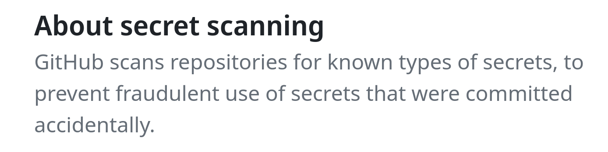

Secrets in the code#
What are the secrets?
API keys
Login credentials for data ccess
file paths (FSRDC!)
Variable names (IRS!)
Store secrets in environment variables or files that are not published. Some services are serious about this, such as Github secret scanning:

Where to store secrets#
Stor secrets in environment variables such as “dot-env” files in Python, “Renviron” files in R, or some other clearly identified file in the project or home directory.
Example typed interactively (for Linux and Mac):
MYSECRET="dfad89ald"
CONFDATALOC="/path/to/irs/files"
The above is not recommended.
For storing secrets in files, use the same syntax as for contents of “dot-env” or “Renviron” files, and in fact bash or zsh files (.bash_profile, .zshrc).
Edit .Renviron (note the dot!) files:
# Edit global (personal) Renviron
usethis::edit_r_environ()
# You can also consider creating project-specific settings:
usethis::edit_r_environ(scope = "project")
And use the variable defined in .Renviron:
mysecret <- Sys.getenv('MYSECRET')
Loading regular environment variables:
import os
mysecret = os.getenv("MYSECRET") # will load environment variables
Loading with dotenv:
from dotenv import load_dotenv
load_dotenv() # take environment variables from project .env.
mysecret = os.getenv("MYSECRET") # will load environment variables
Yes, this also works in Stata
// load from environment
global mysecret : env MYSECRET
display "$mysecret" // don't actually do this in code
and via (what else) a user-written package for loading from files:
net install doenv, from(https://github.com/vikjam/doenv/raw/master/)
doenv using ".env"
global mysecret "`r(MYSECRET)'"
display "$mysecret"
Simplest solution:
//============ non-confidential parameters =========
include "config.do"
//============ confidential parameters =============
capture confirm file "$code/confidential/confparms.do"
if _rc == 0 {
// file exists
include "$code/confidential/confparms.do"
} else {
di in red "No confidential parameters found"
}
//============ end confidential parameters =========